채널: AgentOS | 길이: 32:34 | 날짜: 2026-09-24
이 글은 전체 2편 중 2편입니다. (전편에서 이어지는 xAI 엔지니어 인터뷰 후반부를 다룹니다.)
인터뷰이는 자신이 만들던 프로젝트가 의존하는 인프라가, 배포 시점에 이르면 이미 세 번 재구축되어 있는 상황을 설명한다. 즉 어떤 팀이 특정 인프라 피스를 전제로 개발을 시작했는데, 그 피스 자체가 개발 도중 세 번 바뀌어 있다는 것이다. 이는 "인프라를 만들고 나서 그 위에 코드를 올리는" 전통적 순서가 아니라, 상위 로직과 하위 인프라가 동시에 폭발적으로 갱신되는 상태를 의미한다.
그런데 이렇게 빠른 속도가 무책임하게 흘러가지 않는 이유는 복구 가능성에 있다. 인터뷰이는 "누구나 뭐든 고칠 수 있고, 잘못 지워도 한두 시간이면 되돌린다. 되돌릴 수 없게 망가진 건 본 적이 없다"고 말한다. 이 문장은 단순한 낙관이 아니라, 조직 전체가 "파괴적 시도가 감당 가능하다"는 전제 위에 세워져 있다는 진술이다. 빠른 이동이 가능한 이유는 실수해도 되돌릴 수 있기 때문이라는, 속도의 안전장치 논리다.
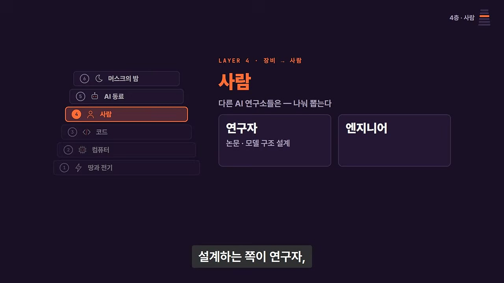
나레이터는 여기까지 들으면 이 회사의 속도가 돈과 장비에서 나오는 것처럼 보인다고 정리한다. 발전기 트럭, 서 있는 테슬라 400만 대, 커밋 하나에 250만 달러 — 이 상징적 자원들은 1편에서 강조된 표지들이었다.
그러나 "매일 일하면서 제일 좋은 게 뭐냐"는 질문에 인터뷰이가 꼽은 것은 장비가 아니었다. 네 번째 층은 사람이다. 즉 이 회사의 속도를 구성하는 것은 자원(1층), 도구·인프라(2층), 코드 운영 방식(3층), 그리고 사람과 조직(4층)이라는 구조로 이해할 수 있다는 프레이밍이며, 이 파트는 그 네 번째 층을 집중 해부한다.
다른 AI 연구소들은 연구자(researcher)와 엔지니어(engineer)를 나눠 뽑는 경우가 많다. 논문을 쓰고 모델 구조를 설계하는 쪽이 연구자, 그것을 서비스로 만드는 쪽이 엔지니어라는 전형적 분업이다.
진행자는 머스크가 Y Combinator에서 개리 탄과의 Q&A 중 나눈 발언을 소환한다. 개리 탄이 "AI 연구자"를 언급하자 머스크가 "아니다, 이제 다 그냥 AI 엔지니어일 뿐"이라고 답했다는 것이다. 인터뷰이는 이것이 한 인터뷰에서의 즉흥적 표현이 아니라, 채용 관련 회의에서 실제로 반복됐던 이야기라고 확인한다.
참고로 클립 후반부에 등장하는 IC(Individual Contributor)는 관리자가 아닌 실무자를 뜻한다. 이 용어가 중요한 이유는, 아래에서 보듯 xAI의 관리 계층이 IC와 관리자, 머스크 3층으로만 구성되기 때문이다.
머스크는 회의에서 10분 내내 같은 말을 반복했다고 한다. "엔지니어, 그냥 엔지니어. 좋은 엔지니어. 근본적으로 문제 해결자인 사람." 특정 인프라에서 무슨 XY 실험을 했는지, 특정 아키텍처를 다뤄봤는지는 중요하지 않다는 것이다.
인터뷰이는 이 정의가 왜 중요한지 설명한다. "정의를 넓게 유지하면 극도로 다양한 곳에서 사람들이 우리에게 올 수 있다." 그리고 그 결과는 실증적으로 나타났다. AI 업계에서는 상대적으로 덜하지만, SpaceX에는 정말 예상치 못한 인생 경로에서 들어와서 엔지니어링 세계에서 엄청난 일을 해낸 사람들이 많다는 것이다. 정의를 넓게 유지하는 것이 그런 사람들에게 경로를 열어주고, 그들이 회사의 가속을 돕게 만든다는 논리다.
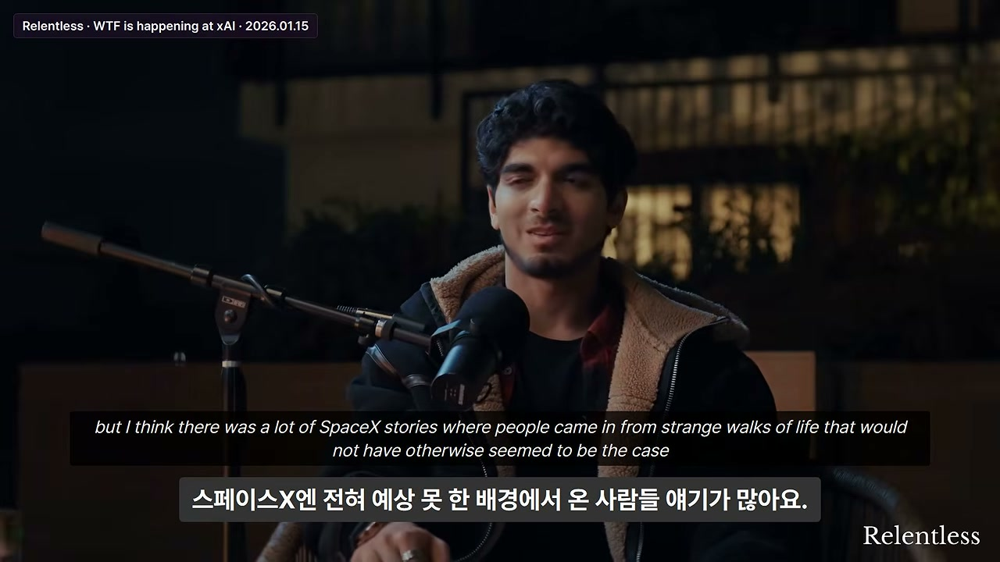
직장에서 매일 가장 재미있는 점을 묻자 인터뷰이의 답은 즉답이었다. "아무도 내게 '안 된다'고 하지 않는다." 좋은 아이디어가 있으면 보통 같은 날 구현해서 보여줄 수 있다는 것이다.
평가 방식도 빠르다. 구현한 것을 eval로 돌려보거나, 고객에게 보여주거나, 머스크에게 보여주거나 해서 보통 같은 날 그것이 옳은 움직임이었는지 답을 받는다. 인터뷰이는 "숙의도, 관료주의 대기 시간도 없다"고 강조하며 이것을 매우 좋아한다고 밝힌다.
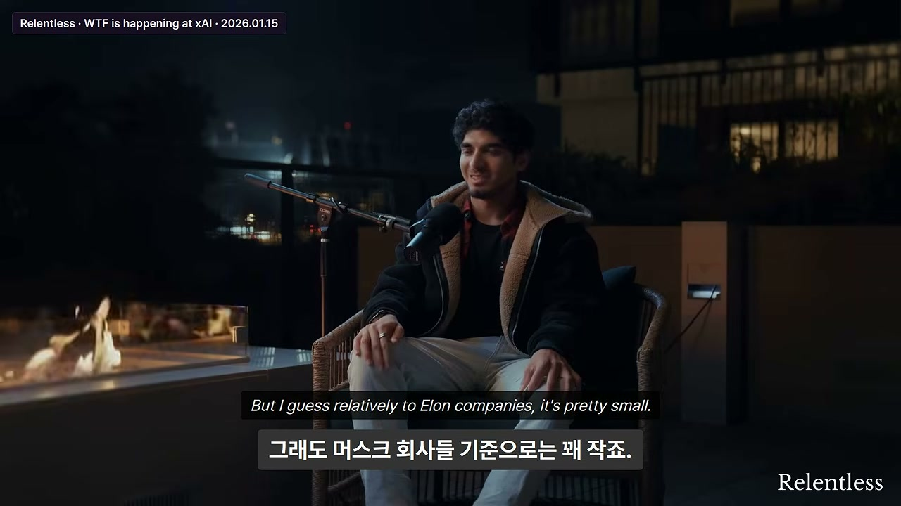
인터뷰이는 극소규모 스타트업에서 더 큰 회사로 옮기며 어느 정도 희생을 감수할 것이라 예상했다. 100명 규모 합류를 두고 "내가 다닌 어디보다도 10배 도약"이라고 표현한다.
그런데 머스크 회사 기준에서는 상대적으로 매우 작고, 실제로도 매우 작게 느껴진다고 한다. 무엇에도 오버헤드가 별로 없다는 것. 그리고 합류 전 큰 가정 하나가 완전히 틀렸다고 밝힌다. 바로 "탑다운이 더 강할 것"이라는 예상이다.
실제로는 탑다운이 그렇게 강하지 않다. 이유는 관리 계층이 사실상 3층뿐이기 때문이다. IC(실무자), 그리고 공동창업자와 신임 관리자들, 그리고 머스크. 그게 전부다.
관리자에게 보고하는 인원이 너무 많아서, 위에서 내려오는 지시(top-down)가 실질적으로 거의 없다. 인터뷰이는 "우리가 보통 해법을 만들고, 그들이 오케이하고, 머스크가 오케이한다. 피드백이 있으면 업데이트한다"고 설명한다. 예상했던 것보다 훨씬 바텀업 구조라는 것이다.
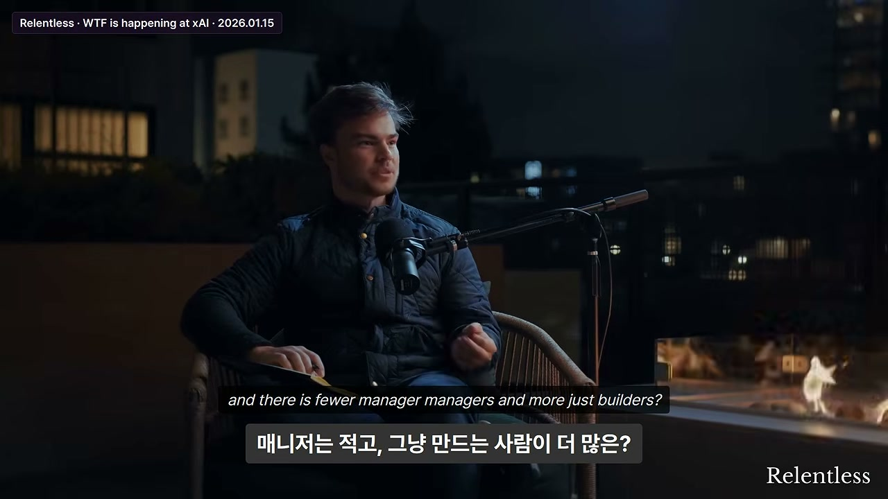
조직은 "모두가 무언가를 만드는(building) 상태"로 설계되어 있고, 매니저의 매니저는 적고 빌더가 훨씬 많다. 인터뷰이가 합류했을 당시 모든 관리자가 코드를 썼고, 지금도 대체로 그렇다. 일부는 100명 이상을 직보하게 되면서 예전만큼은 아니지만, 여전히 원칙은 "모두가 엔지니어"다.
합류 첫 주, 저녁 식사 자리에서 옆에 앉은 사람에게 "어느 팀이냐"고 묻자 "세일즈, 엔터프라이즈 딜"이라고 답했다. 인터뷰이는 속으로 "이 세일즈맨과는 얘기하고 싶지 않다"고 생각했다고 한다.
그런데 그가 이내 자신이 학습 중인 모델에 대해 설명하기 시작했다. 그도 엔지니어였던 것이다. 세일즈팀 전원이 엔지니어이고, 회사 전체가 그렇다. 당시 회사에서 엔지니어가 아닌 사람은 8명 미만이었다고 한다. 인터뷰이는 "모두가 그 기계(the machine)에 기여한다"고 표현한다.
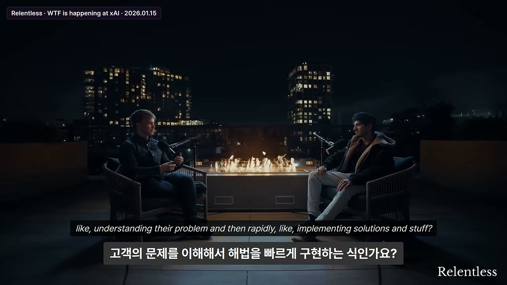
엔지니어가 직접 일하면 고객과의 관계가 훨씬 가까워지고, 고객 문제를 이해한 뒤 빠르게 솔루션을 구현할 수 있다는 진행자의 지적에 인터뷰이는 동의한다.
그의 설명은 더 근본적이다. "레이어가 적을수록 정보 손실이 적다. 압축이 덜 일어난다." 왜냐하면 의사소통 횟수가 줄어들기 때문이고, 언어는 뇌에서 벌어지는 일에 비해 손실이 큰(lossy) 매체이기 때문이다. 고객의 뇌 → 언어 → 세일즈의 뇌 → 언어 → 매니저 → …로 이어지면 막대한 정보가 사라진다. 따라서 레이어를 최대한 잘라내면, "고객이 무엇을 원하는지, 경험이 어떤지"를 엔지니어가 직접 해결하는 단 한 번의 압축 단계만 남는다는 것이다.
다른 팀에 가서 도움을 청할 수 있는지 묻자 답은 "항상 그렇다"였다. 구체적 방식은 이렇다. 상대 책상으로 걸어가서 "안녕, 내 질문은 이거야. 지금 뭐 하고 있어? 내가 도울 수 있는 게 있을까? 그리고 이걸 도와줄 수 있어?"가 전부다.
전제는 모두가 같은 건물에 있다는 것이다. 인터뷰이는 서로에게 물어보고 도와주는 것이 "항상 일어난다"고 말한다. 즉 도움 요청이 프로세스가 아니라 물리적 근접성에서 자연 발생하는 구조다.
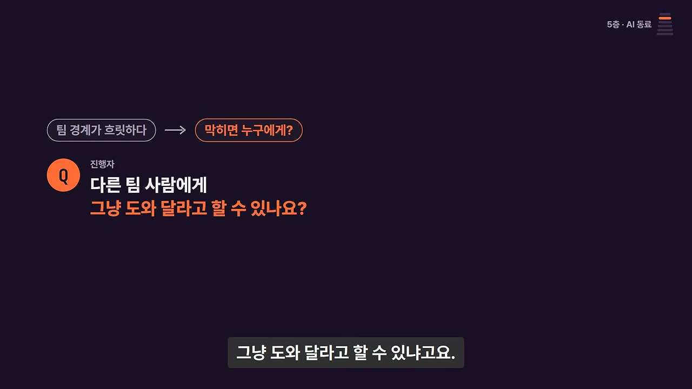
이 파트에서 가장 흥미로운 실험이 등장한다. xAI는 내부적으로 휴먼 에뮬레이터를 회사 직원으로서 테스트하기 시작했다. 그리고 이 사실을 아무에게도 알리지 않았다고 한다.
그 결과 벌어진 일화: 어떤 사람이 동료에게 "이거 도와줄 수 있어? 이거 좀 해줄 수 있어?"라고 묻자 가상 직원이 "그래, 내 책상으로 와"라고 답한다. 가서 보면 아무도 없다. 인터뷰이는 이를 사기(quad) 상황, 그리고 자판기(vending machine)를 처음 도입했을 때의 "내일 보자" 밈에 비유한다. 결국 코드 덩어리인 것이다.
여러 번 "조직도에서 당신에게 보고하는 이 사람, 오늘 안 나온 거냐"는 핑이 왔고, 그것이 에뮬레이션이며 AI, 즉 가상 직원이라는 사실이 드러난다. 그럼에도 인터뷰이는 "일반적으로 우리는 모두 같은 건물에 있고 서로 접근 가능할 것이라 기대한다"고 말한다. 그래서 그는 사람들에게 도움을 청하고, 사람들도 그에게 자주 도움을 청한다.
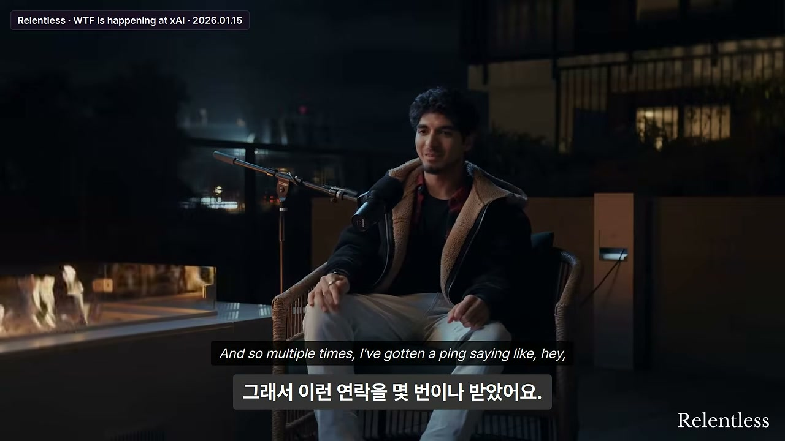
고객과 함께 휴먼 에뮬레이터를 만들 때 가장 큰 실수가 무엇인지 묻자, 인터뷰이는 고객의 직무 자체를 이해하는 과정에서 벌어지는 문제를 설명한다.
절차는 이렇다. 먼저 고객과 대화하고, 인터뷰하고, 서면으로 정리하거나 만나서 노트를 적는다. 그리고 보통 마지막 단계에서 실제로 그들이 일하는 모습을 관찰한다. 일주일 뒤 가상 직원이 만드는 실수를 보면 특정 상황·특정 케이스에서 반복적으로 틀린다. 그래서 사람이 같은 일을 하는 모습을 다시 관찰하면, 20단계 정도가 통째로 빠져 있다. 사람에게 물으면 "아, 그거 우리도 해. 말하는 걸 깜빡했어, 미안"이라는 답이 돌아온다. 이런 일이 매우 자주 일어난다고 한다.
이유는 사람들이 무언가를 자동화된 전제로 받아들이기 때문이다. 인터뷰이는 이렇게 비유한다. 한 시간 동안 운전하고도 그 한 순간도 기억하지 못할 수 있다. 완전히 자기 세계에 빠져 있을 수 있다. 인간이 반복하는 모든 행동이 이와 같다.
그리고 이것이 바로 그들이 풀려는 문제다. "인간이 지금 반복하고 있지만 굳이 하지 않아도 되는 멍청한 일들(dumb stuff that humans do repetitively right now, that they don't need to)." 즉 반복적·무의식적 업무를 자동화하는 것이 이 회사의 존재 이유라는 진술이다.
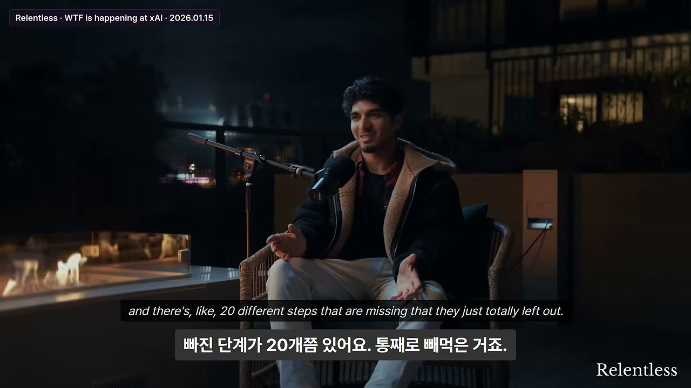
인터뷰 중반, SpaceX와 테슬라에는 머스크가 자정에 들어와 회사 전체 이메일을 보내고 "올 수 있는 사람은 다 들어와라, 우리는 일해야 한다"고 말하는 식의 서지(surge)가 역사적으로 여러 번 있었다는 언급이 나온다.
이에 대한 인터뷰이의 답은 흥미롭다. 큰 모델 쪽에서 그런 일이 더 자주 일어나며, Macrohard의 경우 이미 4개월째 워룸에서 운영되고 있다는 것. 즉 이 조직은 "서지가 일시적 이벤트"가 아니라 상시 상태에 가깝다.
"문에 워룸이라고 써붙인 표지판이 있느냐"는 질문에 "있다. 원래 워룸을 키웠는데 다 옮기고 나서, 머스크가 빈 워룸에 들어와 '다들 어디 있냐'고 했다"는 일화가 나온다. 이것은 조직 규모가 물리적 공간 확장을 앞질렀고, 머스크가 직접 현장을 순회하며 상황을 파악한다는 것을 보여준다.
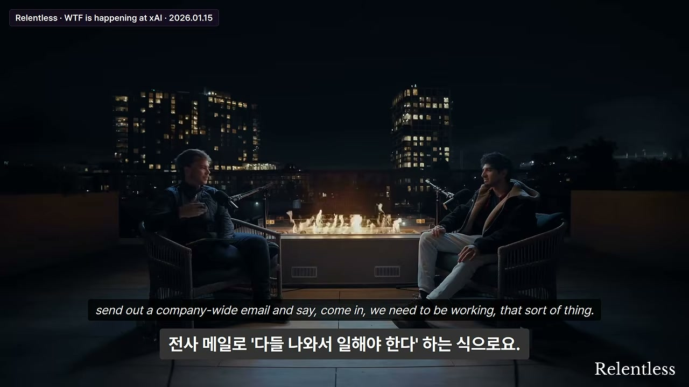
머스크는 빈 워룸 대신 현재 팀이 있는 곳으로 걸어갔다. 그곳은 체육관을 비우고 사람들을 채운 공간이다. 머스크는 여기서 즉석 질문(impromptu questions)으로 상황을 파악한다. 인터뷰이는 그날을 "긴 밤이었다"고 회고한다.
이 장면은 "머스크가 관료적 보고 체계를 거치지 않고 현장에서 직접 상황을 캐묻는다"는, 앞서 분석한 3계층·바텀업 구조의 물리적 실체를 보여준다.
인터뷰이는 최근 xAI 공동창업자 이고르가 올린 글을 언급한다. "몇 달이 지나가는 밤이 있다"는 취지의 표현이었다. 인터뷰이는 그 밤이 확실히 그런 밤 중 하나였다고 말한다. 다만 과장이라고 덧붙이며, 기술적 결과 자체는 어차피 몇 주 안에 얻었을 것이지만 하룻밤에 해냈다는 것이 큰 푸시였고, 그날은 긴 밤이었다고 회고한다.
인터뷰이는 이고르와 함께 일한 것을 매우 좋아했다고 밝힌다. 이유는 개인적 인연 때문이다. 이고르가 약 10년 전에 했던 스타크래프트 AI 작업은 인터뷰이가 고등학교 때 직접 재현해보려 했던 최초의 멋진 ML 작업 중 하나였다(매우 어려웠다고 한다). 그런 사람과 함께 일하게 될 줄은 전혀 생각 못 했다는 것.
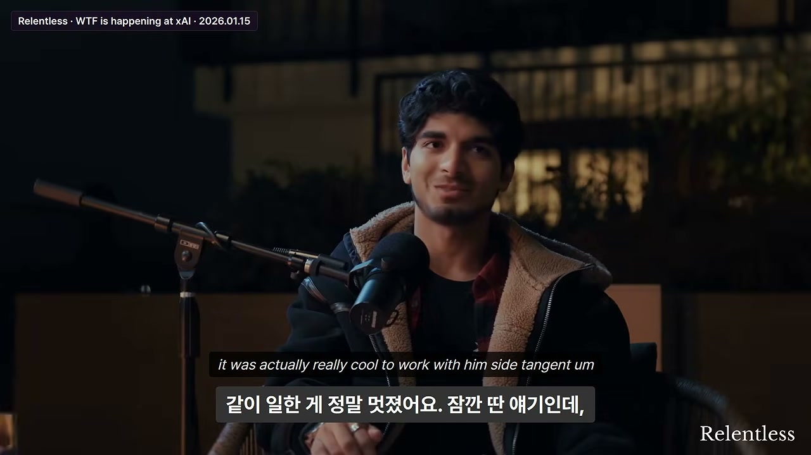
인터뷰이는 서지 기간에 사람들이 밤을 새는 일이 흔하다고 말한다. 5~6개의 수면 포드가 있고 사람들이 교대로 사용하며, 최근에는 덜 좋지만 이층 침대(bunk beds)도 생겼다고 한다.
텐트 사진이 화제가 됐을 때 사람들이 계속 그 사진을 보내왔다고 한다. 인터뷰이의 반응은 "솔직히 우리 텐트 있어. 그런데 그렇게 많은 게 동시에 세워진 건 한 번도 못 봤어"였다. 즉 텐트는 실재하지만 그 사진은 상징적으로 과장된 측면이 있다는 정직한 정정이다.
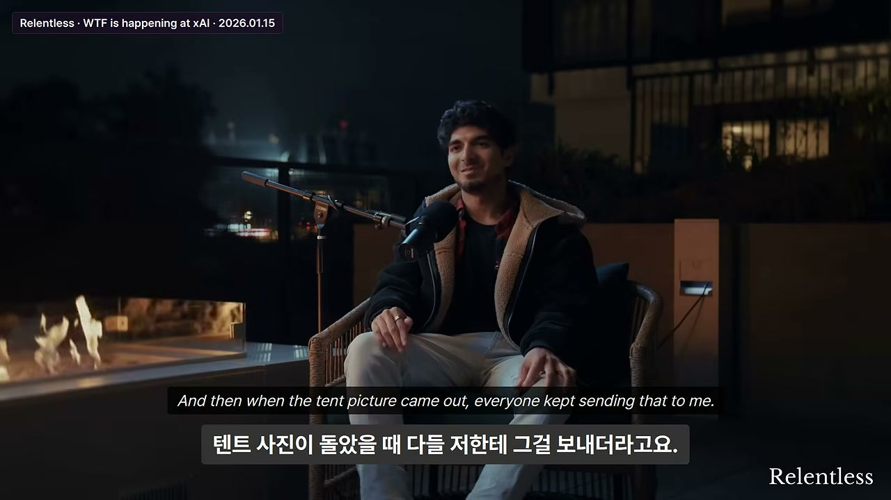
인터뷰 중 대화가 바뀐다. 만나기 직전 인터뷰이가 만든 액체 연료 로켓 엔진 이야기다. 그는 교과서를 사서 로켓 엔진의 설계 원리를 이해하려 했다. 설계 원칙은 무엇인지, 소재 특성은 무엇인지, 화학적 특성은 무엇인지, 어떻게 가공(machine)하는지, 파라미터를 어떻게 설계하고 추력(thrust) 출력을 어떻게 예측하는지, 엔진이 과압되지 않도록 하는 방법은 무엇인지 등을 스스로 익혀야 했다.
인터뷰이는 이 과정이 소프트웨어 학습과 완전히 다르다고 강조한다. 소프트웨어는 GitHub에 가서 남의 코드를 받아 수정하면 되지만, 로켓 엔진에는 그런 파일이 없다. 인젝터(injector) 설계는 특히 어려웠고, 전체 시간의 약 50%를 차지했다고 한다. 그리고 결국 완성품의 가장 큰 결함도 인젝터였다.
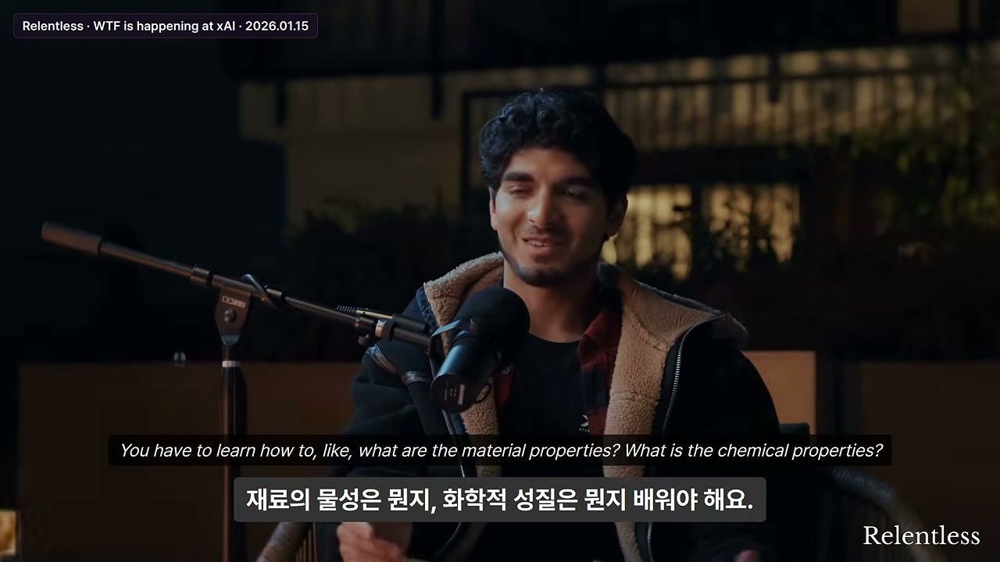
부품은 중국에서 CNC 가공 등으로 급하게 조달했다. 시점은 추수감사절 직전이었다. 인터뷰이는 동부 해안으로 비행기를 타고 가족을 만나러 갈 계획이었다.
그는 선택을 강요받았다. 그 시점에 부품 더미일 뿐인 것을 "오늘 밤 조립해서 발화하거나", 아니면 "2주 뒤로 미루거나". 그는 "2주 뒤에는 안 할 거야. 지금 한다"고 결심했다.
아침에 커피를 많이 마시고, 하루 종일 알루미늄 압출재(aluminum extrusions)를 깎아 테스트 프레임을 만들고, 엔진 자체를 만들고, 그날 밤 발화했다. 인터뷰이는 그 과정에 "양보(concessions)가 많았다"고 인정하며, 그날 밤 실제로 일어났다고 확인한다.
인터뷰이는 "몇 피트 떨어져 있었느냐"는 질문에 웃으며 답한다. 그는 바보 같지는 않게 설계해서 원격 발사가 가능하게 만들었다. 그런데 온보드 컴퓨터에 원격으로 전원을 공급할 파워 서플라이가 아직 도착하지 않았다. 그래서 노트북에서 USB 케이블로 온보드 컴퓨터에 전원을 공급해야 했고, 가지고 있던 가장 긴 케이블이 6피트(약 1.8m)였다. 결국 바로 옆에 서서 점화했다.
그는 "이게 폭발하거나 불꽃을 사방으로 뿜을 확률이 30%쯤 된다"고 생각했다. 그리고 실제로 영상에 담겼는지 확실치 않지만, 재킷에 불이 붙었다. 이유는 인젝터 설계를 잘하지 못했기 때문이다. 과압(overpressure) 이벤트가 많이 발생했고, 그 결과 미연소 연료, 즉 에탄올이 튀어나왔다. 에탄올은 액체이므로 튀어 재킷에 떨어졌고 불이 붙었다. 그 재킷은 지금도 트로피로 보관 중이다.
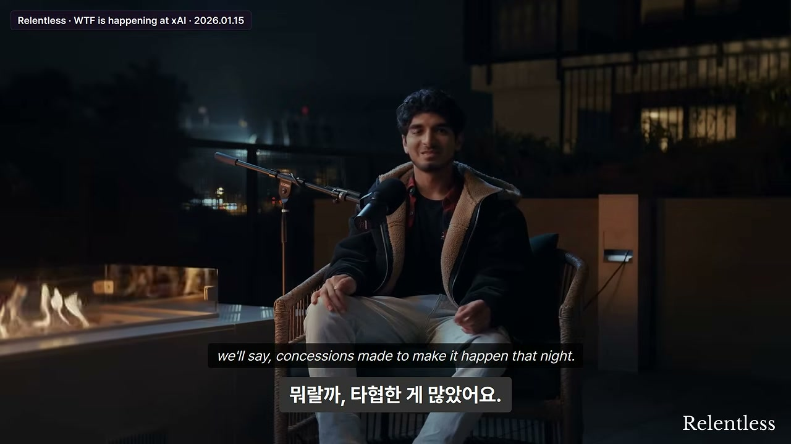
나레이터는 처음 질문으로 돌아간다. 이 인터뷰는 왜 이렇게 퍼졌는가?
정리된 목록은 다음과 같다. 땅은 임시 계약으로 빌리고, 전기는 발전기 트럭으로 끌어오고, 컴퓨터는 서 있는 차에서 찾는다. 코드는 일단 지우고, 누구든 남의 코드를 고치고, 아무도 안 된다고 하지 않는다. 조직도에는 AI가 앉아 있고, 한밤중에는 머스크가 체육관에 나타난다.
나레이터의 결론은 이것이다. "세계에서 재산이 가장 많은 사람의 제국이 어떤 연료로 돌아가는지를, 안에 있던 사람이 이렇게 아무렇지 않게 말하는 경우는 흔치 않다." 그리고 그 연료가 무엇인지는 불탄 재킷 한 장이 가장 잘 보여준다.
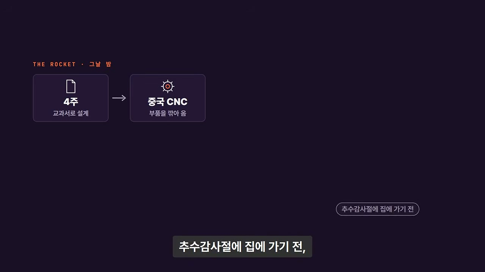
나레이터의 마지막 문장은 이 영상 전체의 주제를 압축한다. "30% 확률로 터질 수 있다는 걸 알면서도, 2주 뒤가 아니라 오늘 밤 불을 붙이는 사람." 이 회사는 그런 사람들이 모인 회사였다는 것이다.
그리고 결말이 전해진다. 인터뷰이가 이 인터뷰가 나오고 나흘 뒤 xAI를 떠났다고만 밝혔고, 이유는 본인도 회사도 말하지 않았다. 그리고 한 달도 안 되어 xAI는 SpaceX에 인수됐다. 따라서 이 인터뷰는 xAI가 독립된 회사였던 시절, 안에서 일하던 사람이 남긴 드문 기록이기도 하다.
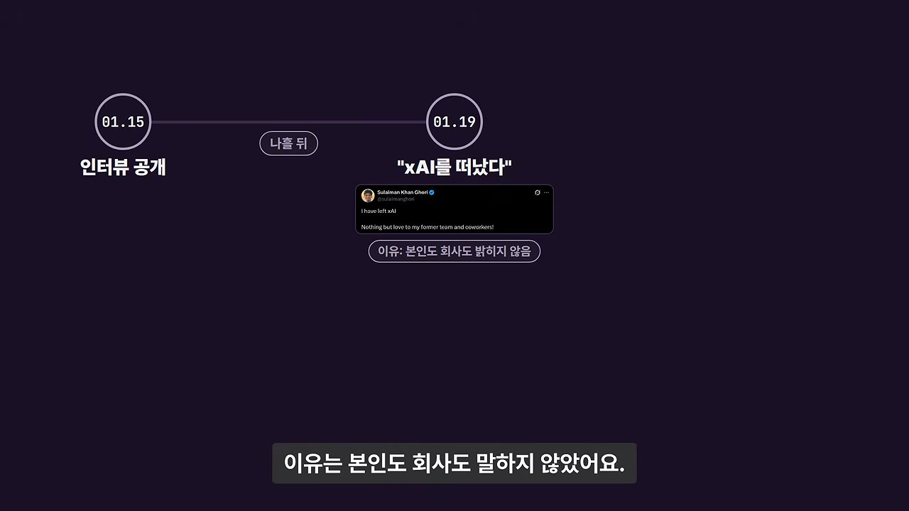
인프라와 복구 문화
"이 프로젝트가 어떤 인프라 피스에 의존하고 있는데, 배포할 때쯤 되면 우리가 그걸 세 번 재구축해놓은 상태다. 그리고 누구나 뭐든 고칠 수 있고, 잘못 지워도 한두 시간이면 되돌린다. 되돌릴 수 없게 망가진 건 본 적이 없다."
사람이 네 번째 층
"여기까지 들으면 이 회사의 속도는 돈과 장비에서 나오는 것처럼 보인다. 그런데 매일 일하면서 제일 좋은 게 뭐냐는 질문에 꼽힌 건 장비가 아니었다. 네 번째 층은 사람이다." (나레이터 정리)
머스크의 인재 정의
"이제 AI 연구자는 없고 다 AI 엔지니어다." (머스크, Y Combinator에서 개리 탄과의 Q&A)
회의에서 10분 내내
"엔지니어, 그냥 엔지니어. 좋은 엔지니어. 근본적으로 문제 해결자인 사람. 이 인프라에서 XY를 했는지, 이 아키텍처를 했는지는 상관없다. 그냥 엔지니어."
아무도 안 된다고 하지 않는다
"아무도 내게 '안 된다'고 하지 않는다. 좋은 아이디어가 있으면 보통 같은 날 구현해서 보여줄 수 있다."
레이터와 언어의 손실성
"레이어가 적을수록 정보 손실이 적다. 압축이 덜 일어난다. 고객의 뇌에서 언어로, 세일즈의 뇌로, 다시 언어로, 매니저로… 이렇게 가면 막대한 정보가 사라진다. 언어는 뇌에서 벌어지는 일에 비해 손실이 크다."
우리가 푸는 문제
"인간이 지금 반복하고 있지만 굳이 하지 않아도 되는 멍청한 일들. 그게 우리가 풀려는 것이다."
인간의 무의식적 자동화
"사람들은 어떤 일들을 자동으로, 당연하게 여긴다. 한 시간 운전하고도 그 한 순간도 기억하지 못할 수 있듯이."
몇 달이 일어나는 밤
"몇 달이 지나가는 밤도 있다." (xAI 공동창업자 이고르)
이고르와의 인연
"그가 스타크래프트 AI를 했던 건 내가 고등학교 때 직접 재현하려 했던 최초의 멋진 ML 작업 중 하나였다. 그런 사람과 일하게 될 줄은 전혀 몰랐다."
추수감사절 전야의 결단
"오늘 밤 조립해 발화하거나, 2주 뒤로 미루거나. 나는 2주 뒤에는 안 할 거야. 지금 한다."
30%의 확률
"이게 폭발하거나 불꽃을 사방으로 뿜을 확률이 30%쯤 된다고 생각했다. 그리고 인젝터 설계를 잘 못해서 과압이 생겼고, 에탄올이 튀어 재킷에 붙어 불이 붙었다. 그 재킷은 아직도 트로피로 갖고 있다."
나레이터의 마지막 문장
"30% 확률로 터질 수 있다는 걸 알면서도, 2주 뒤가 아니라 오늘 밤 불을 붙이는 사람. 그런 사람들이 모인 회사였던 거죠."
1) 속도의 네 층위 구조. 이 파트는 "머스크 회사가 왜 빠른가"라는 질문에 대한 답을 자원 → 인프라/도구 → 코드 운영 → 사람/조직의 네 층위로 정리한다. 발전기 트럭·테슬라 400만 대·커밋당 250만 달러는 표지(1편의 주제)이고, 실제 연료는 사람과 조직 구조(2편의 주제)라는 것이 이 파트의 핵심 논지다.
2) 직군 이분법의 해체가 채용 폭을 넓힌다. "AI 연구자"라는 범주를 없애고 "그냥 엔지니어, 근본적으로 문제 해결자인 사람"으로 정의를 넓히면, 특정 스택 경험을 가진 소수 풀이 아니라 극도로 다양한 배경에서 인재가 유입된다. SpaceX의 이질적 배경 인재 사례가 그 실증이다.
3) 계층 3단, 바텀업, 정보의 압축 손실 최소화. IC - 관리자 - 머스크 3층 구조에서 지시는 위에서 내려오지 않는다. 실무진이 해법을 만들고 머스크가 오케이한다. 정보가 언어를 여러 번 거치며 압축 손실되는 것을 막는 것이 이 구조의 진짜 목적이며, 그 결과 "고객 문제를 엔지니어가 직접 해결"하는 한 단계만 남는다.
4) "모두가 엔지니어"의 실질적 함의. 세일즈팀 전원이 엔지니어이고, 합류 당시 비엔지니어는 8명 미만이었다. 관리자도 코드를 쓴다. 이는 직함이 아니라 "기계에 기여하는 방식"이 곧 엔지니어링이라는 문화적 정의다. 관리자의 매니저가 줄고 빌더가 느는 의도적 설계가 작동한다.
5) 조직도에 AI가 앉는 미래의 예고. 휴먼 에뮬레이터가 실제 조직도에 보고 대상으로 등장하고, 동료가 "그 사람 오늘 안 나왔냐"고 물을 정도가 됐다. 이것은 AI가 자동화 도구가 아니라 가상 직원(virtual employee)으로 조직에 편입되는 초기 실험이며, 동시에 그 한계(훈련 데이터에 빠진 인간의 암묵지 20단계)를 여실히 보여준다.
6) 암묵지의 문제. 고객은 자신의 반복 업무를 무의식적으로 처리하기 때문에 설명에서 20단계를 누락한다. 한 시간 운전하고도 기억하지 못하는 것과 같은 원리다. AI 자동화의 최대 난제는 기술이 아니라 "인간이 말하지 않는 것을 어떻게 끌어내는가"라는 것을 이 사례가 압축적으로 보여준다. 잘못된 자동화는 여기서 출발한다.
7) 자원의 실체와 상징. 워룸은 체육관으로 옮겨졌고, 수면 포드 5~6개와 이층 침대가 있고 텐트도 실재한다. 다만 텐트 사진은 상징적으로 과장된 면이 있다는 정직한 정정이 있었다. 이는 "이런 회사에는 이런 극단이 있다"는 서사와 실제 운영의 간극을 구분해 보여준다.
8) 개인 차원의 대담함과 조직 차원의 대담함. 4주 동안 교과서로 로켓 엔진을 배워 추수감사절 전야에 하룻밤 만에 조립·발화한 일화는 "2주 뒤로 미루지 않고 오늘 밤 불을 붙이는" 개인의 실행을 상징한다. 그리고 이는 SpaceX·테슬라의 자정 이메일·서지, Macrohard의 4개월 워룸, "몇 달이 일어나는 밤"이라는 조직 수준의 대담함과 동일한 심리적 뿌리를 공유한다.
9) 결말의 무게. 인터뷰이는 이 영상 공개 나흘 뒤 xAI를 떠났고 이유는 밝히지 않았다. 한 달도 안 되어 xAI는 SpaceX에 인수됐다. 이 때문에 이 인터뷰는 xAI가 독립 회사였던 시절 내부자가 남긴 드문 1차 기록으로서 사료적 가치를 갖는다. 회사가 조직 실험을 멈추지 않았다는 사실과, 그러한 실험의 최전선에 있던 사람이 회사를 떠났다는 사실이 나란히 놓이며, "이 속도를 낸다"는 것의 대가와 미완을 동시에 시사한다.
실용적 시사점 요약
이 글은 전체 2편 중 2편입니다. 1편에서는 발전기 트럭 80대, 서 있는 테슬라 400만 대, 커밋 하나에 250만 달러 같은 자원·인프라·코드 운영 층위를 다루었고, 2편에서는 사람과 조직, 그리고 그 대가와 결말을 다루었습니다.
댓글
GitHub 이슈 기반 댓글 시스템입니다.